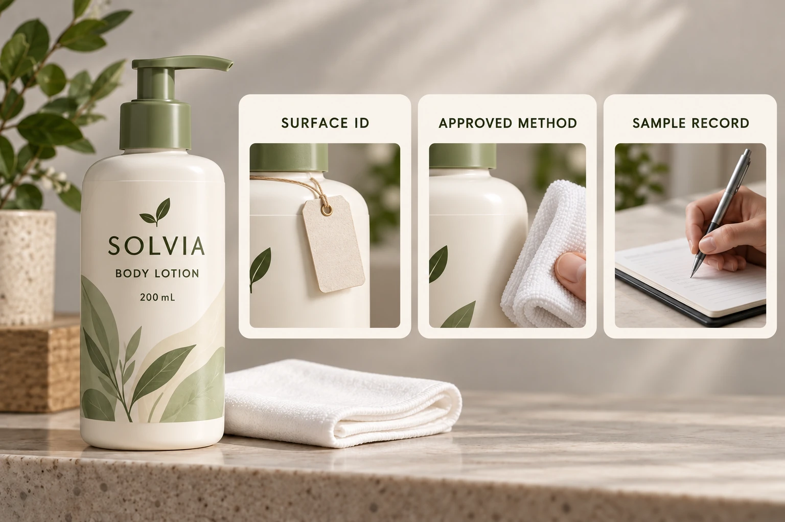

Identify what the adhesive will actually touch
Record the container supplier, material and any coating, decoration or surface treatment. A glass bottle can present a coated surface; a frosted appearance may not identify how that finish was produced. Obtain the supplier's description instead of assigning compatibility by appearance.
The frosted-glass guide addresses the wider material and design choice. This preparation review asks a narrower question: which surface must be preserved while the project establishes suitable conditions for labeling?
Describe known residues and handling history separately. Dust, product residue or moisture may require different investigation. If the material is unidentified, do not ask the operator to experiment with increasingly aggressive cleaners until the bottle looks clear. The relevant specialist needs the missing information first.
Request a supported method, including its limits
Avery's application guidance emphasises a suitable clean, dry surface for its labels. It also gives product-specific preparation advice. That advice should not be copied automatically onto every custom container, coating and adhesive combination.
Ask the container supplier about restrictions and the label supplier about application requirements. The site should confirm which approved preparation route it can execute. Where those instructions conflict or omit an important detail, have the parties reconcile the gap before the comparison begins.
Record the actual method reference, materials used where applicable, responsible operator and completion condition. Keep chemical handling under the site's applicable procedures. This article does not choose a solvent concentration, wiping pressure, drying time or personal-protection arrangement.
Preserve the prepared state until application
Preparation is only one event. Ask how the bottle is handled afterward, where the label panel can be touched and how long it remains before application under the agreed route. A controlled preparation can lose its value if the sample is later handled in an unrecorded way.
Identify the sample and any deviation. If a bottle was touched, exposed or re-cleaned outside the agreed method, record that fact rather than quietly placing it in the same comparison group. The observation may still be useful, but its meaning is different.
Do not turn the prepared appearance into a technical measurement. A surface that looks clean is an observation. Whether it meets a defined requirement belongs to the agreed method and relevant evidence, not an assumption based on a photograph.
Use a preparation-to-sample record
This worksheet is a coordination aid. It makes the preparation route reproducible enough to interpret the later label observation.
| Field | Information | Review question |
|---|---|---|
| Surface identity | Container, coating and supplier reference | What must remain compatible? |
| Initial condition | Known residue, moisture and handling history | What is preparation intended to address? |
| Restrictions | Container and label supplier instructions | Which proposed actions are supported? |
| Method | Site-approved reference and operator | How was this sample prepared? |
| Completion | Required condition and recorded observation | Was the agreed stage reached? |
| Later handling | Storage, contact and application timing | Was the prepared state preserved? |
| Deviation | Changed step or missing information | Can the sample join the comparison? |
Identify the surface and initial condition first. Reconcile supplier instructions, obtain the site's method and prepare labelled sample references. Apply the label under the agreed conditions, recording deviations and the later observation separately. If preparation changes, create a new identifiable comparison rather than overwriting the first record.
The adhesive sample-plan guide organises the wider application and observation timing. This article resolves the method-selection and compatibility decision that must happen before those samples become comparable.

Change the method only through an identified review
A hypothetical uncoated container with a supplier-supported preparation route may allow a straightforward sample comparison. The team should document that route and avoid adding extra cleaning steps merely because they sound more thorough.
A decorated or coated bottle with uncertain restrictions needs clarification before treatment. If the proposed cleaner affects the finish, the resulting label observation would concern a changed surface. It would not necessarily describe the bottle the brand intends to buy.
When a preparation change is proposed during production, ask which existing evidence still applies and whether another representative sample is needed. The same bottle code does not prove that its surface history is unchanged.
For custom cosmetic labels, send the container reference, artwork, dimensions, quantities and supplier preparation instructions already available. Identify the exact residue or compatibility question. The contact form prepares a message; send supporting files by email or WhatsApp. Agree the method before using two differently prepared bottles to select an adhesive.